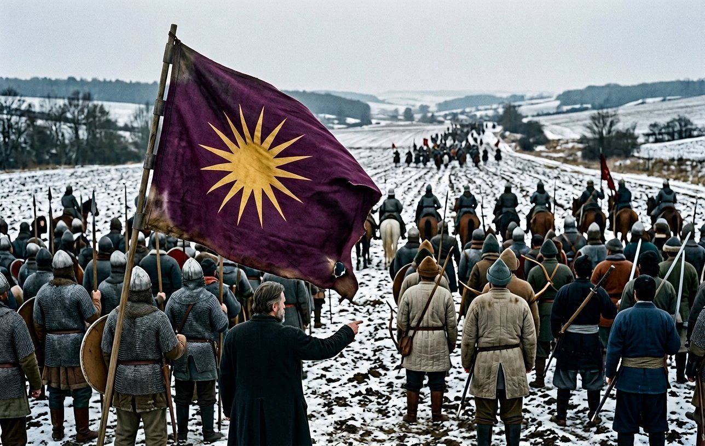
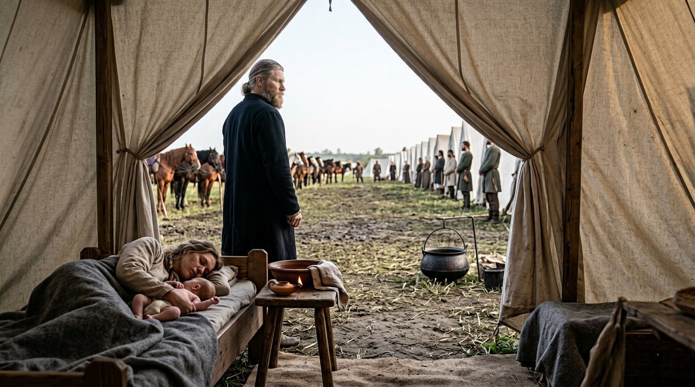
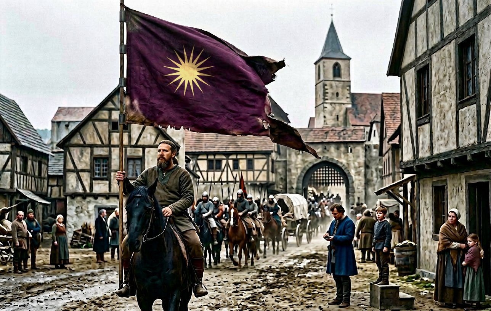
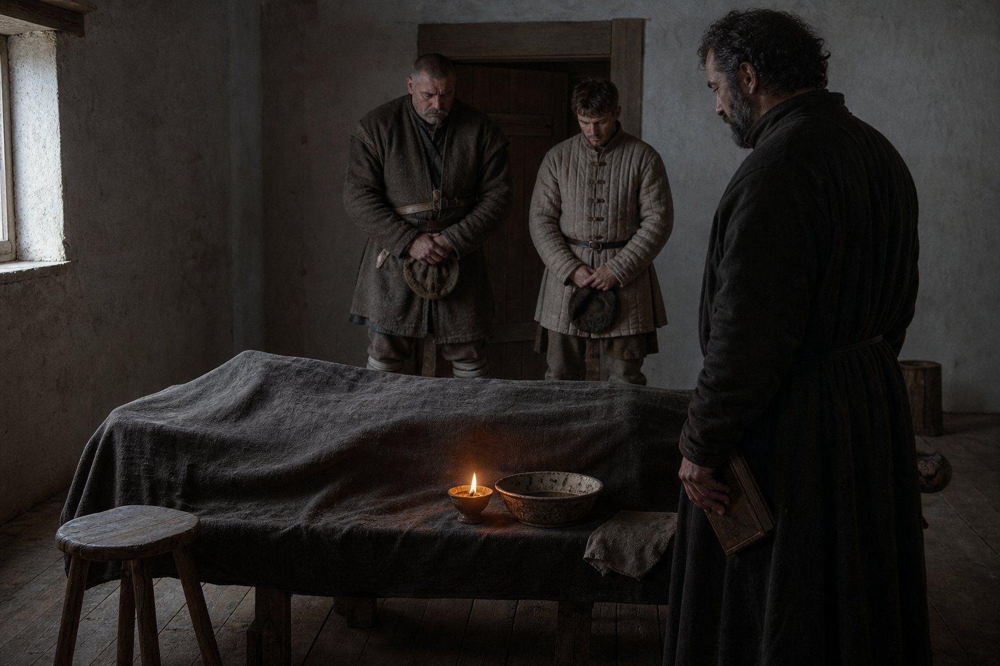
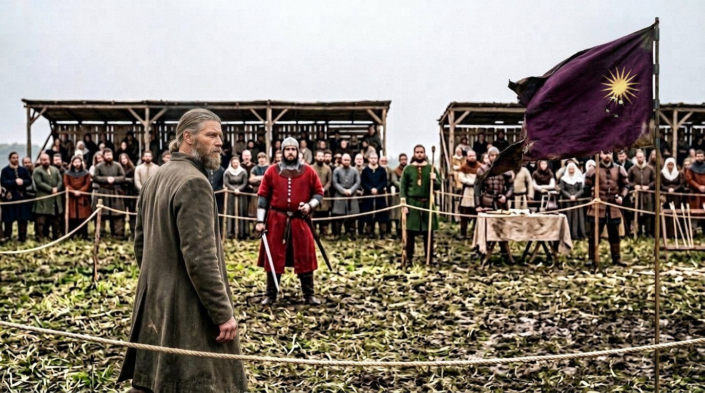
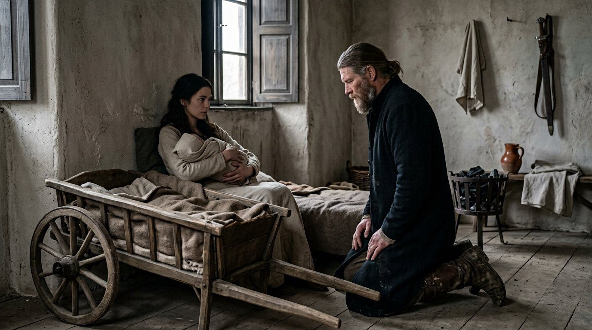
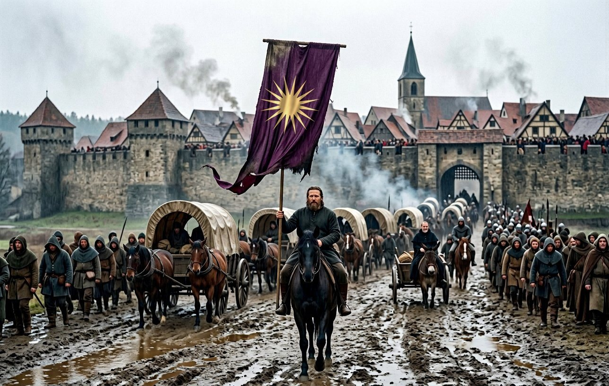
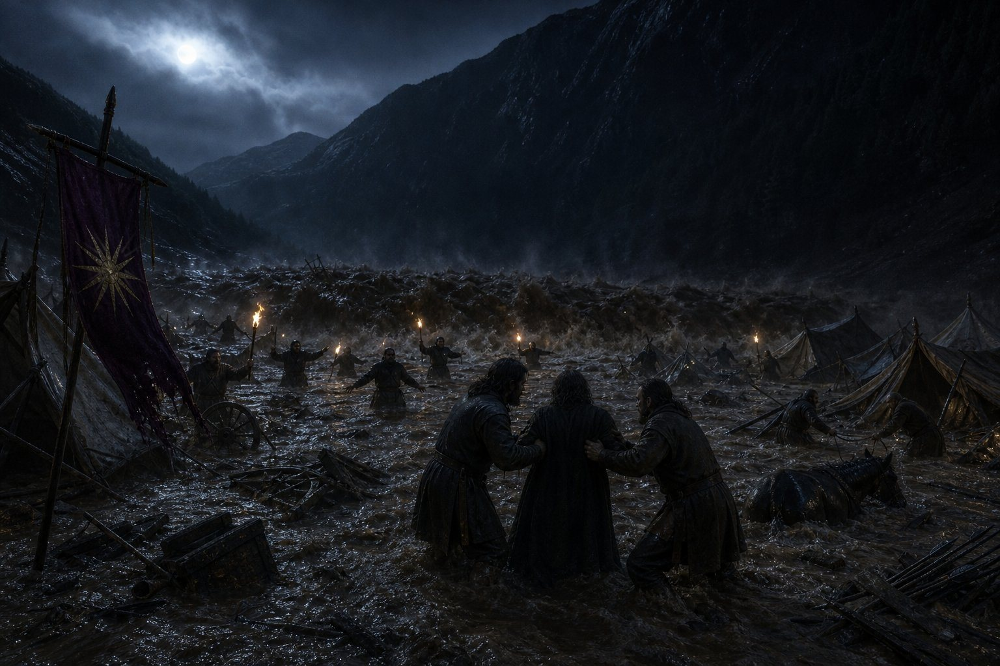
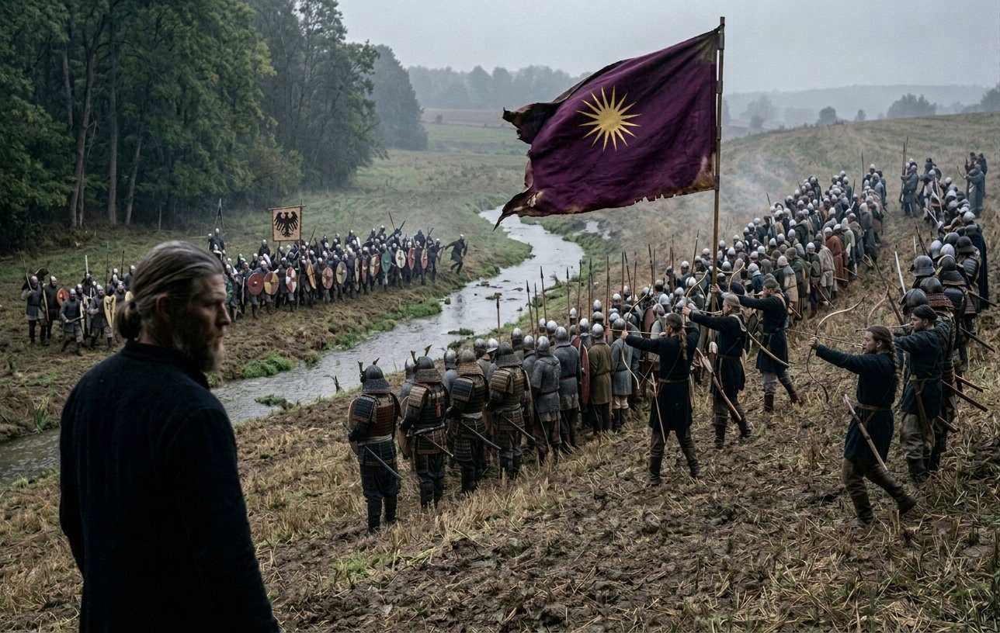

The pen taken up again
I put this book down at Rome in the sixth month of 893, and I was not ill and I was not dismissed, and I have been asked many times since what it was.
It was the arithmetic. I had written eleven years of a company that went out every spring and came back every autumn, and in the year I stopped I did the sum of the men who had come out of the north in 879 and were still on the roll, and I could not make it come to a number I was willing to write down. So I closed the volume at Rome and gave the pen to the smith, and she was angry about it for a year and a half and then she took it and kept it for eight years, and she has done it better than I did, which she has never once said and does not need to.
I am taking it back now, and only for this, and I want to say why at the front of the chapter rather than at the back of it.
Because the roll that came out of the north is going, and it is going in the way that a street goes when the last of the old houses comes down, one a year and then two, and each time a shape in the sky that nobody under forty can see. Delaram in her sleep in 898. Tokifusa of old age in 899. Yáoyuè's heart in the spring of 901. That was the first three. In the five years of this chapter there will be six more, and two of them will not be illnesses, and one of them will not be an accident, and after them there will be a company of two thousand men in which nobody remembers the boat.
I was on that boat. It is my generation that is being counted out, and a man does not hand the counting of his own generation to a woman with a forge to run, however good she is. So I have taken the roll back for the war years, and I will give it up again at the crown, and the smith will have the last of it.
One concession. She has a page in this chapter, near the end, on the two mothers, because there are things about this company I have watched for thirty years and can describe and cannot write, and one of them is what a woman does in a camp when a child arrives.
Two wars in one spring
The company spent the winter of 901 at Komárom with a prize bow and no contract, which is the most dangerous condition a company of two thousand men can be in.
Money was not the trouble. It had four thousand three hundred and ninety-one gold in the chest in 898 and it had never been poorer in its history, and the Captain had spent thirty years learning the one lesson that keeps a hired company alive — that it is cheaper to pay two thousand men to sit still than to let them find their own work. The trouble was that the sitting still was in Hungary, in a country that had hired us twice and been glad twice and had never once asked us to stay.
There is a thing I have wanted to put in this book for years and have not, and this is the place for it. In twenty-five years of this trade I have been in eleven countries, and not one of them has ever been comfortable with us, and they have all been comfortable with our swords. In the first years it was teaching and accounts and letters carried over a border. Then it was the companies, and then the battles, and the more we won, the more carefully the dinner was arranged — a lord in Muntenia put us at a separate table with his own officers standing, and gave us the good wine and the good meat, and did not sit with us. That is what being tolerated looks like when it dresses properly. The one thing none of them ever had to be talked into was the killing.
I am a Roman of the city, born within sight of the walls, and I have never once in my life been taken for a foreigner in the country that made me. The Captain is a Macedonian Hellene with a Japanese robe in his chest and a Greek cloak over it, and he has not been home since 871, and I have watched him be the most useful man in a room and the last man in it to be offered a chair, for thirty years, without complaint, and that — not the battles — is the thing this company is actually made of.
So: two contracts in the spring, and they were taken on the eleventh day of the third month of 902, on the same day, and neither of them was about anything but money and both of them were signed by men who would not have had us in their houses.
The first was Székelyföld, for Margaréta, against a man called Iancu. We fought it in the seventh month at Oblucița against three hundred and sixteen men, and we had two thousand one hundred and seventeen, and two of ours were lost, which means two men did not come back and their names are in the roll and nobody's poem was written about either of them. Margaréta took the county in the first month of 903 and paid on time.
The second was Ladyzyn, for Feodosia.
I want the reader to stop on that name, because Feodosia is in this book three times and never twice the same way. In 891 he was a prisoner in our keeping. In 897 and 898 he was the man whose claim in Muntenia we were hired to break, and whose war failed at Stoenești while we were being paid by the other side. And in the third month of 902 he hired us, and the Captain signed, and the fee was paid in advance, and neither of them said a word about any of it that is in this book.
We fought for Feodosia twice at a place called Bălți in the ninth month of 902, nine days apart. The first day two thousand one hundred and sixteen against one thousand three hundred and one; the second day two thousand one hundred and nine against one thousand four hundred and twenty-eight. Thirty-three of ours in the two days and every single one of theirs, and Ladyzyn was still standing when the money ran out, and the record does not call it a victory and neither will I.

Before any of that, in the second month, there had been Theodosia, which was Yavdi's war and not ours, and which is the only battle in these years that I have ever heard described as a mistake by the men who won it.
We had one thousand nine hundred and ninety-three in the field against the two thousand five hundred and twenty-seven of Yavdi's own household. Thirty-one of ours were killed and one thousand and seventy-six of his, and the reason it was a mistake is not the numbers. The numbers are excellent. The reason is that Iltabar Yavdi the Second never again held a great title, and the war ended in the tenth month with him no longer great, and the record cannot tell us whether Ildey the Proud, whose rebellion we had taken up in the same fashion eighteen months before, is sitting in his chair or in a ditch. So I will not tell you either. I will tell you that we had broken the man who hired us, that the hire had been lawful, and that the Captain collected the fee in full and slept without a light for a week.
Mudra joined us at Krassó in the fourth month of that year, one month after the contracts and a matter of weeks before the thing this chapter is about. She was twenty-seven, born in 875, and the record gives her three words: beautiful, chaste, and — the one that matters, the one that made her the person she became in this company — astute, a reader of men, an intellectual in the exact sense that the clerks of the age use and never intend. She was given a tent and a place at the second table and a horse, and within a month she had reorganised the ordering of the baggage and had made an enemy of the quartermaster and an ally of the smith, which is the correct order to do those things in.
The first child
Antiphates was born on the twenty-third day of the fourth month of 902, at Krassó, to Raina, who was twenty-nine years old, and to the Captain, who was fifty-two.
The record's entire entry for it is five words. *First child was born.* That is the whole of the source, and I have looked at it more than once in the writing of this chapter, because I want to be able to say exactly how much of what follows is the record and how much is mine, and the answer is that the five words are the record and everything else in this section is what I saw.
Fifty-two years old. He had been a soldier since before some of his own men were born. He had no country, no land, no house, no title, and no name in the world except the name a company carries, and the honest way to put it is this: for thirty years his inheritance had been his men, and men are not inherited, they are hired. He had made a duke in 887 and unmade a count at Győr and broken the household troops of two kings in one summer, and when he died the company would have gone to whoever the men chose and the chest to whoever was nearest it.
And on the twenty-third day of the fourth month of 902 a son was born in a tent at Krassó and all of that changed, and I want to be careful here, because the temptation is to make it a scene of joy and it was not principally that.
He came out of the tent and stood in the mud and he was not smiling. He was white. He said, to nobody: *well, that's that, then.* And then he walked the length of the horse-lines and back, twice, and the second time the Ayrudzi were standing, and the Zhanmadao were standing, and by the time he came back to the tent there were two thousand men standing in a camp that had not been given an order.

I have thought about that morning for years and I will give my reading of it and mark it as a reading.
What those men were doing was not cheering an heir. Half of them were Chepangs and Georgians and Japanese and half-converted Cumans who had never in their lives been asked to care about a dynasty. What they were doing was recognising, all at once and without discussion, that the thing they belonged to had been a trade and was now a house, and that a house can be inherited and a trade cannot, and that a company with a son in it is a different animal from a company with a chest in it. It frightened them. I was frightened, and I am a clerk.
The Captain's own reading, given to me once, late, in Bavaria, in the third year of his crown, when he was drunk enough to be exact: *Up to that morning, if I lost, it cost me my life. After that morning, if I lost, it cost him his.*
There is more in the record than the birth, and it is stranger and it is better, and it is why I have given the child a whole section.
On the thirty-first day of the fifth month of 902, five weeks after his son was born, the record notes that the Captain fell in love with his wife.
He had married her in the first month of 901. She had written a page of this book on the second night, in which she said plainly that she had not married him for love and he had not married her for it, and that she had married because she had spent twenty-eight years being the woman in somebody else's household and wanted to be the woman in a house of her own, even if the house had wheels on it. That page is in this book and I have read it four times and it is the most honest page in the two volumes.
For eighteen months he was kind to her, which is not the same thing, and she has told the smith — who told me, who am writing it down, and who will take it out if she asks — that she thought that was going to be the whole of it: a house with wheels and a decent man in the other half of it.
Then a child. And five weeks later, and not before, the marriage became a love affair, and it has never stopped, and I have watched it for six years, and I will say the thing that the record will not: the boy is what did it. Not the birth alone — the *watching her do it*. A man of fifty-two with no country, who had spent his life being tolerated in other men's countries, sat in a tent at Krassó and watched a woman of twenty-nine run a household of two thousand in a language she was still learning, and fall asleep sitting up with a child on her, and do it again the next day.
It was not the first thing he had ever loved. It was the first thing he had ever had that nobody had hired him for.
Udbina
Isidoros was murdered on the twentieth day of the seventh month of 902, at Udbina, and the record does not say by whom.
He had been with us since the first years, he had been in the tent at the top of the table for a decade, and in the whole of the record of his life there is not one line that explains why anybody would want him dead. That is the thing about a company that nobody outside it understands: the men in it have no land, no tenants, no rents and no factions, and a man can serve in it for twenty years and leave an enemy behind him that nobody in the book ever hears of, because the enemies of a hired soldier are not made where the book is looking.
So I will not invent a murderer, and I will not invent a reason, and I will tell you what I actually know, which is this.
In the evening of the twenty-first day of the seventh month in 902 the Captain came into the clerks' tent and asked me how many men of this company I had put in irons in twelve years. I said two. He said, *and how many did I ask you about afterwards?* And I said none, and he stood there a while, and then he said, *that's the trade, then,* and went out.
The word on the camp for a month was that it had been a quarrel over a woman, and the word the month after was that it had been a quarrel over nothing, and by the winter there was no word at all. Two thousand men closed over it the way water does. I have put Isidoros in this book once already, in the year 887, and there is nothing else to say about him except that he was murdered on the twentieth day of the seventh month of 902 and that no one was ever punished for it and that the Captain never once, in the years afterwards, said his name in my hearing.
The war that year was Mürzzuschlag, for Wartrun against Wilhelm, from the eighth month of 902 to the fifth of 903, and we lost it.
I want that plain. It is the only war in these five years that the company lost, and it lost it for the usual reason, which is never the fighting. The record of it is a list of marches and a list of payments and one siege that went on too long, and the enemy did the one thing that a hired company cannot answer, which is nothing. He sat in his hills and would not come out and be broken, and we were paid by a woman whose money ran shorter than his patience.
Wilhelm of the mountains is a name the reader should take note of, and I will say why without spoiling it, because the book has to be honest with its own reader: we fought that man three times in five years. At Mürzzuschlag we lost. At Graz we held. And in the eleventh month of 904 he was in irons in our baggage train, and he died in the winter of 907 while he was still in them.
The year 902 was not all of it bad. Sofija came to us in the ninth month and Adam Frankopan in the eleventh, and Adam is worth a paragraph of his own.
He was nineteen years old, he was a head taller than any man in the company and heavier than two of them, and the record's description of him is two words: a giant, and a confident knight. He had been trained since he could hold a stick and he arrived with a good horse and a bad temper and no money at all, which is the most common combination in the trade. Within a month he had beaten the Captain at wrestling, and within a year he had stopped doing it, and by the time of the crown he was the third name in the company after the Captain and Chrysogonos, which is me, and I am flattered by the order and I did not set it.
Boril died on the fifteenth day of the twelfth month of 902, and the record gives a date and nothing else, and he is the first of the six.
The German lands
In the second month of 903 we took Usora for Iljko the Monk, and this is the second time in five years that the same thing happened, and I want to set them side by side because the reader will not believe either of them separately.
Iljko the Monk was the enemy at Završje in 899 and 900: a man whose county we spent a year and a half trying to take off him for somebody else. In the second month of 903 he hired us. In the ninth month of 904 he hired us again, to take Knin, and he paid in advance both times, and the Captain took the money both times, and neither of them ever mentioned Završje.
That is not treachery and it is not quite honest, and I have decided, in my fifty-fourth year, that it is what the trade is: a company is a sword that a country can rent, and the countries have always understood that better than the moralists. The men who wrote to Rome about us in 895 did not object to our being hired by Iljko. They objected to our being hired at all by anyone, in a Christian country, under a sun.
Then, in 903, we went west.
Kammersberg. Hallstatt. Salzburg.
There is a sentence I have been saving. The first time the company ever saw Salzburg it was in the summer of 903, coming up the river road with two thousand men and eleven hundred horses and forty wagons, and the gate was shut, and we sat outside it for two days and were then let in by a gate-warden who counted us through in fours.
The Captain rode in at the head, as he always did, under the sun on its pole, and a crowd came out to look at us — because they do come out, they always come out, a foreign company is the best free entertainment in a small country — and I watched their faces and I have watched them in eleven countries and it is always the same three faces. There is a man who is calculating what we cost. There is a boy who wants to see the horses. And there is a woman who has already decided that her daughter will not be going to the well while we are here.
In Bavaria the third face was the common one, and it was the one that mattered, and by the winter of 903 the Captain knew it. I know he knew it because he stopped going into the towns.
Uta joined us at Salzburg in the eleventh month of 903. She was a German, of a family from the river country, and she had come out of a bad marriage in a way that the record does not describe and this book does not invent. She was twenty-two, and she was not a wife and never became one, and in the second month of 907 she gave the Captain a fourth son, and it is in the record in the plainest possible words, and we will come to that.

On the twenty-fifth day of the tenth month of 903 we took a contract from Ernst, called the Wolf, for Coburg.
It was the smallest contract in the chest and the largest thing in the book, and nobody in the company understood that at the time, and I include myself and I include the Captain.
Coburg was a county in Franconia, and Ernst's claim on it was like every claim we had ever been hired to make stand up: a marriage two generations back, a cousin with a better lawyer than a sword. We were to go into Franconia and take a county and be paid, and by the reckoning of the previous ten years that meant one campaign and a winter and a spring, and then back east where the contracts were.
We went into Franconia in the autumn of 903 and we did not come out of the German lands for three years.
I have gone over the record of that contract a dozen times looking for the moment it changed and there is no moment, because it is not in the record. There is a march in the tenth month, a payment in the eleventh, a small siege in the winter — and then the years stop being about Ernst's cousin and start being about the country. Bavaria in 903 was not one country and it was not three; it was a dozen lordships with a king over them who was said to be a lazy man and was certainly an excommunicated one, and every one of those lordships wanted the county of Coburg for somebody, and every one of them had money, and the company was the best sword for rent in Europe and it was now standing in the middle of them.
So it kept getting hired, and it kept winning, and it stayed. And in the course of staying it learned the roads and the fords and the fields of the country it would one day take, and none of us wrote that down at the time because at the time it looked like a run of good contracts.
On the first day of the first month of 904, at Regensburg, in a country that was not ours, the Captain became what the record calls a *Legendary Blademaster*.
I have never liked the word and I did not invent it, and it is the record's own. He was fifty-four years old. It is not a title that any herald gave him and no king confirmed it; it is a word that two thousand men had begun to use, in eleven languages, in the same sense, about the same man, and by 904 it had become the way the trade described him when it needed to explain a price. There were men in the company who had never seen him draw a sword and would have told you he was the best in Europe, and the reason they believed it is that they had seen what happened to the men who came at him expecting a sword fight and got an anatomy lesson.
He was not faster than he had been at forty. He was more economical. I have watched him fight eleven times in thirty years and the last three were shorter than the first three, and the last one was over, as far as I could see, before it began.
Ana
Ana was murdered on the twenty-fourth day of the first month of 904, at Regensburg, and on the same day the Captain imprisoned Momchil the Brute.
The record puts those two facts on one date and does not join them, and I am going to write about the day and not join them either, and I want the reader to understand that this is not squeamishness and not a clerk protecting a lord. It is the truth. Momchil the Brute carried, in the record's own list of a man's qualities, the word *murderer*, and he was twenty years in this company and he was in the hall at Regensburg as a lord of the court in 908. What the record does not say is that he killed her, and a book that has refused for two volumes to invent a murderer is not going to invent one because the date is convenient.

This Ana is not the Ana of 893 who died in our keeping. That is the sort of sentence that a book of this kind has to write and that a reader has to be told twice: there were two women of that name in the company, and both of them are dead now, and the first died in the Captain's irons in the Liberty War, and the second was murdered in his own camp eleven years later, and the confusion between them has cost this company more in reputation than either death.
She had been with us since 881, she had a hundred and eighty-one entries in the record, and by 904 she was a leper.
That is the word the record uses. I want to be exact about what it means in a company and not in a city, because the two are nothing alike. In a city a leper is driven out; there are ordinances, bells, a hut outside the wall. In a company of two thousand moving men, there is no outside. She stayed. She had a tent, she had a servant, she had the last of her faculties, and her hands were gone and one side of her face was gone, and she was severely injured besides — a fall, two years before, that she never really recovered from — and she ate at the far end of the second table where the light was bad, and men who would walk into a line of spears would not sit down beside her.
I sat with her. I am not proud of the number of times, I am telling the count honestly: eleven times in two years, and the reason I know the number is that I am the man who counted. She talked about the north. She had come out of the north in 879 with the rest of them, and she remembered the boat, and she remembered Edouinos in the year before the boat, when he was a young man on a riverbank in a Greek cloak with no idea in the world what he was going to be.
And now, at Regensburg, in the country we would take in two years: murdered, in a camp with two thousand men in it and a wall of sentries and a Captain who could tell you the name of every horse, and nobody punished.
He imprisoned Momchil the same day. He kept him in irons for a time that the record does not give. He let him out and Momchil stayed in the company, and fought in the war, and was at the crowning, and had land of his own by 908.
That is the thing about this company that I cannot make into a virtue and will not make into a scandal, because it is neither. It is what a brotherhood looks like from the inside when the founding generation begins to close over its dead. Ana was a leper of the 879 roll, and the roll was going, and Momchil was twenty years of the company, and a Captain of fifty-four with an army in a foreign country cannot hang twenty years of the company on a date.
I have written that sentence three ways and every one of them is an excuse. Here is the plain one. He was the most just man I have ever served, and he did not do justice for Ana, and both of those things are in this book.
Verona
The war of Helferich was the longest of the five years: from the twelfth month of 902 to the seventh of 904, with Gausberto the rebel at our side, and it ended with Helferich no longer holding a great title, and I have already explained what the record can and cannot say about that kind of ending and I will not repeat it.
In the fourth month of 904, at Verona, we fought the battle that is the reason I have given this war a section of its own.
Two thousand and eighty-four of ours against the two thousand four hundred and forty-four of a woman called Beatrix. Every single one of hers was lost. Six of ours.
I have written that number twice now to be sure of it, and I want to give the reader the arithmetic, because the arithmetic is the whole of what a company's reputation is made of and nobody outside it ever does the sum. One thousand men in two thousand four hundred do not all die in a battle. What happens is that a line breaks and the men in it run, and the men who run are killed from behind for the length of a field, and the men who catch them are the ones with the horses, and the ones with the horses are us, because the Ayrudzi ride and the light horse rides and the Zhanmadao does not need to. Six of ours. Every one of hers. That is not a battle either. It is what a company of eleven nations does to an army that has not learned what a company is.
And I will tell you what the Captain did afterwards, because it is the only thing in this section that I think a reader should carry.
He walked the field. He was fifty-four and he had just won the most complete victory of his life, and he walked it on foot, from the place where the line had stood to the far hedge, and he would not let anybody come with him and he was there for two hours. Then he came back and gave the order that the wounded of the enemy were to be gathered in the same tents as ours, and the pay-clerk to be sent round, and the fee to be collected, and then he went into his tent and did not come out for a day and a half.
Gandolfo died on the twenty-ninth day of the seventh month, when the war ended, and the record's cause of death for him is broken — it reads *died from being someone* — and this book gives no cause, except to say that he had been ill for a long time.
Győr
The Grand Tournament at Győr ran from the sixth month of 904 to the eleventh, and the Captain went into it as he had gone into Tarnów and Komárom, which is to say he went into it the way a man goes into a fight, and this time it went differently.
He was fifty-four. He wrestled. In the ninth month, on the twenty-ninth day, he beat Captain Bertók of the host, a man fifteen years younger, and the record notes it without comment and two thousand men did not.
Then on the fourth day of the tenth month a knight called Mihály insulted him.
The record does not preserve the words, and I was not near enough to hear them, and half the company later claimed to have heard them and every version was different and all of them agreed on the sense of it, which was that a hireling with no land and no lord and a foreign god had no business in a Hungarian list.

The Captain did not answer him. That is the first thing. In thirty years I had never once seen him let an insult in a public place lie, and he let that one lie, and it lay there for four days.
He was through to the semi-final. He had beaten better men that season. On the eighth day of the tenth month — four days after the insult, in a contest he would in the ordinary course of things have won — he resigned the bout to his opponent, Chieftain Bertalan, before it was fought, and walked out of the ring, and Bertalan went on and won the tournament.
Every man in the company has an explanation. The explanations are: that he was preserving a business arrangement with the host; that he had been bought; that he was ill; that he wanted to teach the company something about pride; that he had been insulted by a Hungarian and had decided that the whole of Hungary could have its prize. I have heard all five from men who were there, and the record does not say, and the Captain never said, and I have asked him — once, in the fourth year of the crown, with wine in him, in a bad month — and he looked at me for a while and said, *I've no idea. I'm not a young man any more.*
That is the answer I have. It is the first contest in two volumes that he walked away from and it is the only one he never explained, and I have put it in this chapter next to the three battles because it belongs next to them.
Two mothers
Timostrate was born on the twentieth day of the eleventh month of 904, in the town of Győr, to Mudra.
Not to Raina. I am going to write about this plainly because the record writes about it plainly and because a book that has spent two volumes explaining a company's arithmetic should not go delicate at the first thing that a modern reader will find uncomfortable.
The facts are these. Mudra joined the company at Krassó in the fourth month of 902, seven years younger than Raina, and was given a horse and a tent and the running of the baggage. In the eleventh month of 904 she had a son. In the second month of 907 Uta — who had joined at Salzburg in the eleventh month of 903 — had another, and the record marks that child, in its own words, as the child of a concubine. And Raina, who was the wife, and had been the wife since the first month of 901, had a son in the first month of 906 and another in the first month of 908, and in the tenth month of 907 the Captain's own record calls her his soulmate.
There is no version of those facts in which nobody was hurt. I have watched this company for thirty years and I will not pretend to the reader that a man of fifty-four in a camp of two thousand did anything but what men of fifty-four in camps of two thousand do, and I will not write it as a romance either. What I will write is what the record shows, which is that it was all in the open, that it stayed in the open, that no woman was sent away and no child was hidden, and that in 908 there were five sons of one man in one hall in Regensburg and their mothers sat at the same end of the same table.

The boy joined the company at Regensburg on the first day of the twelfth month, eleven days old, being carried, and that is in the record as an event, and there is something in it that I find I cannot say in my own voice.
The Greek has left me the two mothers and gone off to write about a wall, which is what he does when he cannot do a thing, and I have known him nineteen years and I do not mind it now.
I will say what he cannot, and I will say it shortly, because it is not a subject for a smith's eloquence.
There is nothing in a camp for a child. That is the first thing. A company is built for men who can be moved in the morning, and a child is the one object in the world that cannot. So the child makes the camp grow a thing it does not have: a cart that is not for baggage, a tent that is not on the muster, a woman who was on the muster and is not any more, a fire that has to be kept going in the rain for somebody who is not a soldier. I have made more small iron in the last five years than in the twenty before it — nails for a cradle that gets broken down twice a month, a hook for a pot, a pin. Nobody writes that in a chronicle. The chronicle writes *first child was born* and gets on with the war, and the whole of the rest of it is women doing arithmetic in the dark.
Second thing, and this is the one I will put my name to. Raina was not the mother of the boy born in the eleventh month of 904 and she was the one who put the cart in the train for him. I have seen her do it and I have never once heard her explain it, and if the reader wants to know what sort of woman the Captain married, that is the page, and not the one she wrote at Beroe.
Regensburg
In the ninth month of 904 the company took Knin for Iljko the Monk against a man called Andreas. Two thousand one hundred and forty-seven of ours against one thousand nine hundred and eighty-four, eleven of ours lost, seven hundred and eighty-four of his.
The record has that in the ninth month and the tournament of Győr also in the ninth month, twelve hundred miles apart, and I have stared at the two entries and I cannot make the calendar work and neither can the clerks who came after me. So this book prints both and says so, which is the most honest thing a chronicle can do with a contradiction that does not matter: the county was taken, Iljko paid, and one of the two dates is wrong and nobody will ever know which.
In the eleventh month, on the thirteenth day, we took Wilhelm of the mountains prisoner.
That is the man who beat us at Mürzzuschlag in 903. We were at Graz in the twelfth month, for Euphemia, and we held the field, and the holding of it was the smallest and most satisfying thing in five years, and the Captain had him in irons in the baggage before the month was out and kept him there until the winter of 907, when he died.
On the first day of the twelfth month of 904 the company came to Regensburg for the first time.

I have thought a great deal about how to write that sentence and there is no way to write it that is not a lie by omission, so I will simply tell the reader what I knew on the first day of the twelfth month of 904, and it is this: nothing.
We came up the Danube road in the last week of a wet autumn with two thousand men and a train of fifty wagons and the usual crowd at the gate, and we were let in because Ernst the Wolf had a contract with the city's bishop and the bishop had money, and we took the east quarter and the horse-market and we paid for the forage in advance because the Captain had learned that lesson at Vidin ten years before. It rained. The men were quartered in three barns and a nunnery's outbuilding and a warehouse, and the smith set up her forge in the warehouse yard because it had a wall on two sides, and the clerks' tent went up in the mud outside the east gate where the flies were.
It was a good winter. That is what I remember. Pay on time, a warm town, a bishop who did not put us at a separate table, and a new son in the company eleven days old.
There is no man in this book, on that first day of the twelfth month of 904, who said the word Bavaria in the sense in which this book is going to use it in its next chapters. Not the Captain, not Frankopan, not the smith, not me. We came in for a contract and we were warm and we were paid.
The flood
Italy in the spring of 905, and I have written four chapters of this book and never once had to describe water.
Mantua, Luni, Bobbio, Nonantola, Cremona: five towns in two months, contract work, the kind of war that is mostly roads and gates and a letter to a bishop at the end of it. The company was at its full strength, which by 905 was the largest it had ever been, and it had money and it had a reputation that made gates open, and I remember the fourth month of that year as the best month of my life in the trade, and I am not being ironic.
On the fourth day of the fifth month of 905 the river at Bobbio came up in the night.
It is in the record as a flash flood and that is exactly what it was: not a season of rain, not a bank overflowing, but a wall of water down a valley in the dark with no warning of any kind. The company was camped in the bottom of the valley because the bottom of a valley is flat and dry and a company of two thousand men takes the flat ground wherever it is.
I lost eleven men and a chest of books. The books are in the record because a clerk put them there, and I have never been able to decide whether that is funny.
Dehanagadevi was killed.
She had come out of the north with us in the ninth month of 879, she had two hundred entries in the record, and she had done a thing in the Liberty War that the book has already told and that I will not tell again here. She was swept away at Bobbio in the dark on the fourth day of the fifth month of 905, and she was not found, and there was no body and no burial and no grave for anybody in this company to stand at.

The Captain was in the water. That is in the record too, in the plainest form, as a note of a wound received in the fifth month and healed in the eighth; and the men who pulled him out say he had gone in after her and had to be held, and the men who pulled him out are three and their accounts agree, which in this company is nearly proof.
The light horse lost three hundred and thirty-seven men on that road in that summer. I have set that number down and I want the reader to compare it with Verona, where we lost six out of two thousand against a whole army, because the two numbers are the same fact about the trade and only one of them is ever printed: an army is not killed by armies. It is killed by water and by fever and by the road, and the battles are the part that gets written.
On the fifth day of the sixth month he imprisoned Amadeus the Compassionate and Baldur the Honest on the same day, and the record gives no reason and I have none to give, and in the whole of that terrible summer it is the only entry that I cannot account for at all — except to say that a wounded man of fifty-five with three hundred and thirty-seven dead on the road behind him and a great woman of the old company under the water is not making the same decisions he made at forty.
And on the twentieth day of the sixth month of 905 Kasame fell to her death, in the mountains, at sixty-six years old.
Kasame. The woman who taught a Captain of forty-eight to lie in wait for a roe in the grass below Giurgiu in 898, and who had two hundred and three entries in the record, and who was of the 879 roll.
I have written five hundred words about water and this is the one that matters to me. The roll that came out of the north is now Delaram, Tokifusa, Yáoyuè, Boril, Isidoros, Ana, Dehanagadevi and Kasame, and there are three left in this chapter and I know their names and the reader does not yet.
The field at Lengenfeld
Bavaria, then, for a year and a half, and the war that Ernst the Wolf had hired us for in 903 was still not over, and by 905 nobody in the company except the pay-clerks remembered whose cousin had a claim on Coburg.
Leuchtenburg, in the fourth month of 905: one thousand seven hundred and seventy-four of ours against a thousand nine hundred and seventy-seven of Karl's. Forty of ours lost and one thousand and eighty-eight of his. We were outnumbered and we lost forty men and it is not a battle that any chronicle outside this one has ever heard of.
Kirchenberg, in the seventh month: one thousand one hundred and four against five hundred and fifty-nine, three of ours.
Lengenfeld, in the ninth month: one thousand eight hundred and thirty-two of ours against the six hundred and thirty-four of a man called Otto the Just, two of ours lost.

I want to stop on that field for a moment, and I am aware that I am writing for a reader who does not know why, and that the book is not going to tell him until the next volume, and that this is exactly what a chronicler does when he is honest.
Lengenfeld is a bad slope with a stream at the bottom and a wood on the left. We fought there in the ninth month of 905 against six hundred and thirty-four men and lost two. In the fifth month of 907 we fought there again, against the King of Bavaria, and it is the field on which this book ends and the next one begins, and when I came to write this chapter I found that I had marched over it in 905 without writing a word about it in my own journal, because it was a hundred and twenty-five to one in the killing and I was tired.
Casel, in the first month of 906: one thousand eight hundred and twelve against six hundred and twenty-four, eleven of ours. That one cost more than the two before it together and nobody has ever been able to say why.
Hrolfr was imprisoned on the ninth day of the twelfth month of 905, and the record gives no reason, and this time I have one, and I will not write it, and I will say only that it was a matter of a road and a woman and that the Captain was wrong.
Yen died on the twenty-sixth day of the twelfth month of 905, of old age, at sixty-seven, with two hundred and eight entries in the record.
I have been dreading this paragraph since the first page of this chapter. Of the roll that came out of the north in 879 — the boat, the winter, the fish, the nineteen-year-old in the Greek cloak — Yen was the one I liked best and the one I understood least, and he is the fourth of the nine and I have written three quarters of this chapter and there are two left.
Atenulf and Boldizsár left the company in the tenth and eleventh months of 905. They were not dead and they were not dismissed; they took their pay and their horses and went, and the record marks their going in the same hand as it marks a death, and I have come to think it should. A company's old age is not all mortality. Half of it is men going home to something, and the number of men in this book who had a home to go to is very small, which is why I have named these two.
Chairestratos was born on the third day of the first month of 906, at Linz, to Raina, and joined the company there, a few weeks old.
In the third month of 906 the company came to Regensburg again — the second time, a year and a quarter after the first — and took the east quarter and the horse-market and the warehouse with the wall on two sides, and a young man called Rothard joined, and the smith put her forge back where she had left it.
The ninth day of the fourth month
The company spent the spring of 906 in Regensburg, in winter quarters that had become a summer, and it was not at war in the fourth month of that year, and there were two thousand men in a city on the Danube with nothing to do.
That is the state of affairs on the ninth day of the fourth month of 906. I have checked it. There is no contract running. There is no siege. There is no battle in the record for that month anywhere in Europe. The Captain was fifty-six years old, he would have fifteen thousand two hundred and twenty-four gold in the chest by 908, and he had a wife, four sons, a company of forty regiments, and a reputation that opened gates.
And on the tenth day of the fourth month of 906 he declared war on the King of Bavaria.
I did not know it on the ninth. Nobody did. There was no council that night that any clerk wrote down, and I was awake until the second hour with the pay-ledger and I heard nothing, and the smith has told me she banked her fire at dusk like any other night.
What I remember of the ninth day of the fourth month of 906 is that the flies had come early and that the Captain walked out of the east gate in the evening to the horse-market and stood there for a while looking at the road, and that when I passed him he said, *the Bishop wants to see me in the morning,* and I said, *what about?* and he said, *forage.*
That is the last thing in the record of the eighth year that this company was a company of hired swords, and it is one sentence, and it is mine.